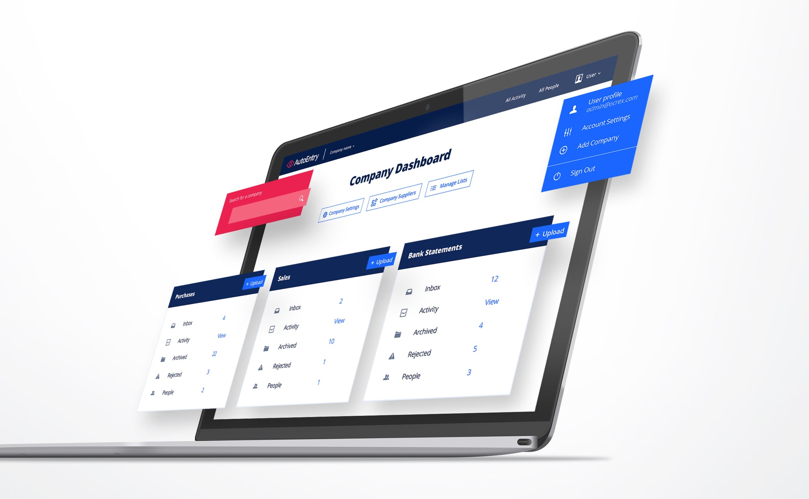
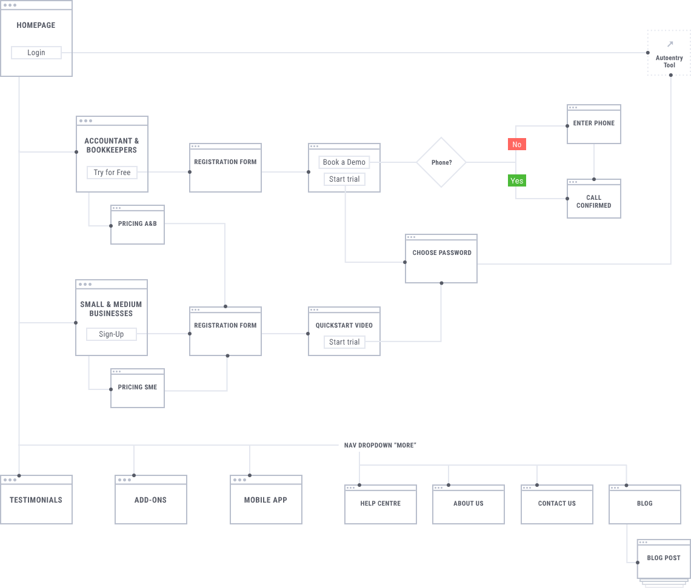
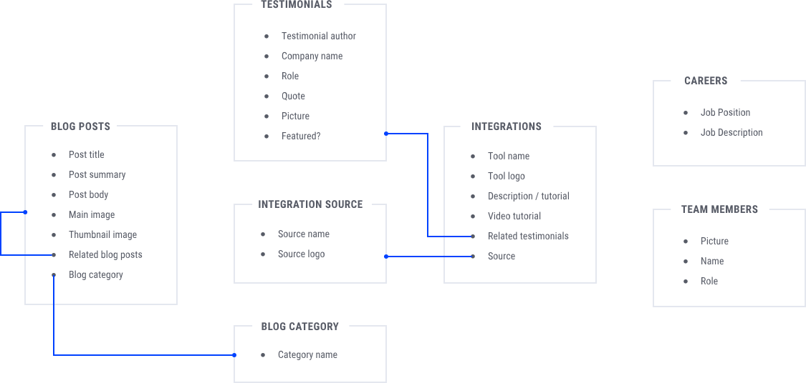
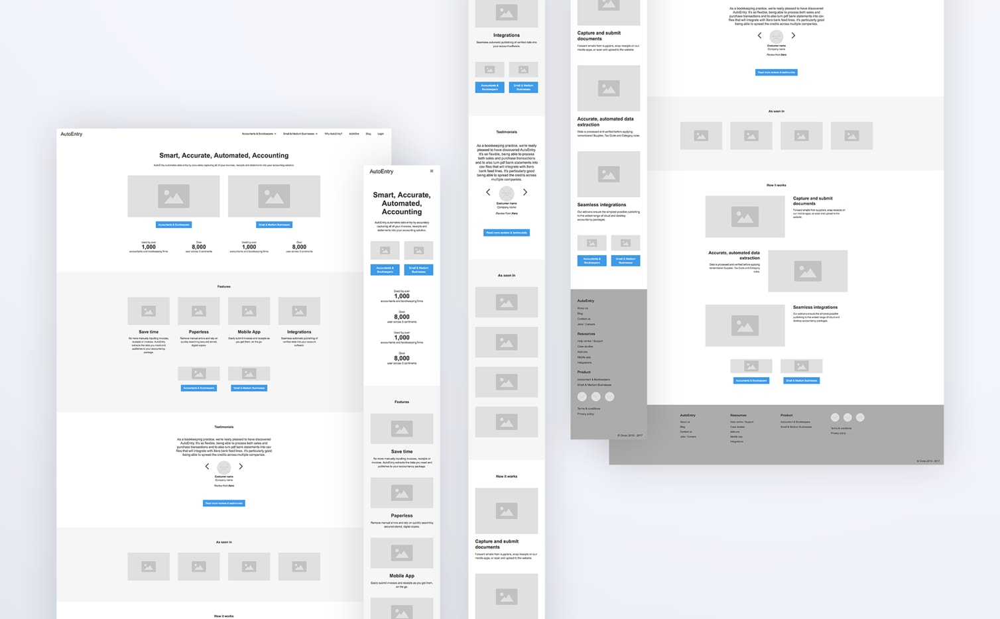
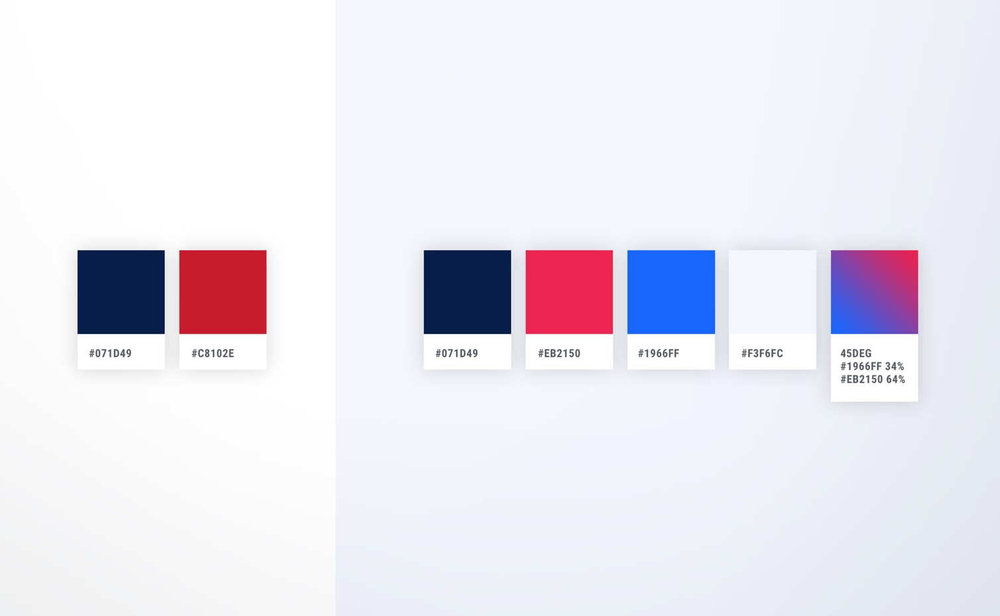
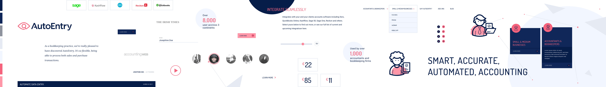
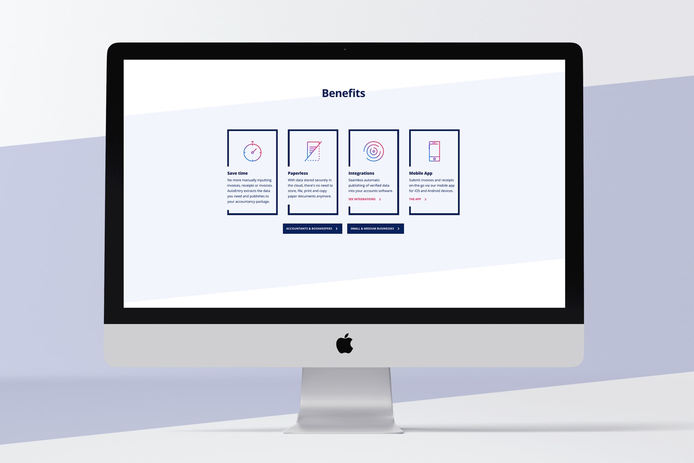

The Client
AutoEntry are specialists in automated data entry. Their software accurately captures invoices, receipts, and statements into the different accounting solutions currently in the market.
The Challenge
AutoEntry request interludio to redesign their website. There were three main points to take into consideration:
- Design a website reflecting the accuracy and power of AutoEntry's software and communicate the benefits in a clear and straightforward way.
- Two different types of users visiting the site: Small & Medium Businesses and Accountant & Bookkeepers.
- A structured content management system to easily add and update content by AutoEntry's content editors.
Getting a clear and precise understanding of the site functionalities and how meets the user’s expectations and the company’s goals.

Collaborative work with AutoEntry’s devs: connecting the registration process with Salesforce and AutoEntry’s user database.
A content model that defines the required content types, the relationship between them and their individual structure.


Development of a live prototype from the wireframe concepts provided by AutoEntry.
We did some adjustments to the color palette to bring in some brightness and attraction.

We presented two different visual directions in the form of stylecapes to define the look & feel of the site.

Exploring and polishing the chosen visual direction: playing with frames and overlapping content.

Angled sections that create a dynamic and modern look.
Angled sections that create a dynamic and modern look.
Icons & illustrations allowed us to clearly communicate ideas and create a better impact on the visual memory of the visitors of the site.

Iterating to find the best way of communicating AutoEntry’s core message.

The accuracy and power of AutoEntry reflected through neat and strong hero images.
The calculator lets the user estimate the number of credits depending on the amount of work needed.
We used rangeslider.js to develop the credit calculator

Autoentry's UX Designer
Karl's quote.
Next Project